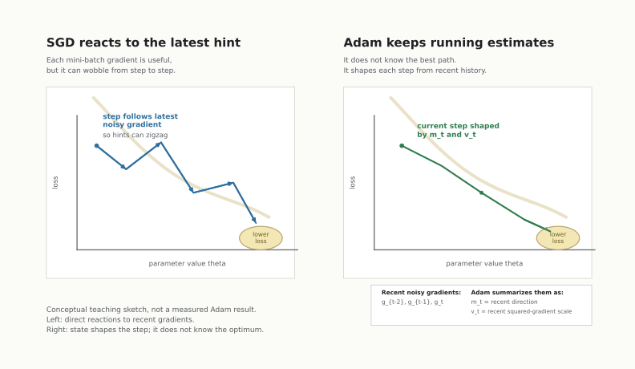

Why Adam Exists
A model has parameters: adjustable numbers that act a little like knobs. Training means turning those knobs again and again so the model makes fewer mistakes.
To tell whether the model is improving, training code uses a loss, also called an objective. The loss is one number that says how wrong the model is on the data being checked. Lower is better.
A gradient is a local hint for how to turn the knobs. If one parameter moved a little, would the loss go up or down? A gradient collects those hints, one per parameter.
The most direct version would measure that hint using the full dataset every time. That can be expensive. So many training loops use a mini-batch: a smaller sample of examples. The mini-batch gradient is cheaper, but it is also noisier because it only sees part of the data.
Stochastic gradient descent, or SGD, follows the latest noisy hint. Adam is an optimizer: a rule for deciding how to change the parameters after seeing a gradient. Adam exists because it does not treat the latest hint as the only thing worth knowing. It keeps state: running summaries of recent hints.
In the Adam paper's notation, theta is the parameter vector: all the knobs collected together. f(theta) is the objective, or loss, for a parameter setting. A training step changes theta.
The Hint Is Useful, But It Is Noisy
The paper calls the mini-batch version of the objective a stochastic objective realization, written as f_t(theta) at timestep t. "Stochastic" here does not mean random for no reason. It means the current objective comes from a sampled or noisy training situation.
The gradient of that mini-batch objective is a stochastic gradient. It is a real downhill hint for the sampled mini-batch. But it may not point exactly where the full dataset would point.
So a simple update rule like stochastic gradient descent has a tension:
- Use the current gradient because it is the freshest local hint.
- Do not trust it too much because it may be noisy.

m_t and v_t are introduced later; this is not a measured result from the paper.A Tiny One-Parameter Example
Imagine there is only one parameter, a knob called theta.
The loss is lower when the knob moves to the right. But each mini-batch gives a slightly different hint:
| Step | Mini-batch hint | What a direct update might do |
|---|---|---|
| 1 | "Move right a lot" | Big move right |
| 2 | "Move left a little" | Partial undo |
| 3 | "Move right" | Move right again |
| 4 | "Move right, but carefully" | Smaller move right |
Nothing mysterious is happening. Each mini-batch is only a partial view of the objective. The current gradient can wobble because the sampled examples, regularization noise, or training mechanism changed the local signal.
The Adam paper explicitly names settings like large parameter spaces, noisy gradients, sparse gradients, and non-stationary objectives. This toy knob is much smaller than those cases, but it shows the core problem: the current gradient is information, not certainty.
Why High Dimensions Make This Worse
Real models do not have one knob. They can have thousands, millions, or billions of parameters. The gradient is then a long vector, with one entry per parameter.
Two things can happen at the same time:
- Some coordinates get large, frequent gradient signals.
- Other coordinates get small or occasional signals.
Sparse features make this especially concrete. In a bag-of-words model, a word that does not appear in the current mini-batch may give no useful update for its associated parameters at that step. Other words may appear often and update repeatedly. Treating every coordinate as if it has the same recent history can be wasteful.
This is why "one learning rate for every parameter, based only on the current gradient" can feel too blunt. The optimizer may need memory.
What Did People Do Before?
Before Adam, there were already several ways to make gradient descent less naive. For this first section, only the design pressure matters:
| Method family | What it roughly tries to remember |
|---|---|
| Plain stochastic gradient descent | Nothing beyond the current gradient |
| Momentum-style methods | Recent direction |
| AdaGrad-style methods | Which coordinates have accumulated large squared gradients |
| RMSProp-style methods | A decaying recent history of squared gradients |
The Adam paper presents Adam as combining two useful ideas: a direction memory and a scale memory. It computes adaptive updates from estimates of the first moment and second raw moment of the gradients. We will unpack those terms in the next section; for now, read them as "a running average of the gradient" and "a running average of the squared gradient."
That is the key motivation:
- The current gradient tells us where the latest mini-batch points.
- Recent gradient history tells us whether that direction and scale have been consistent.
- Adam uses both.
The Point Of This Section
Adam is not magic, and the paper does not need us to believe it is always the best optimizer. The important first idea is narrower and more useful:
In stochastic training, one gradient is a noisy hint. Adam is built around remembering recent hints before choosing the next parameter update.
The next section turns that motivation into the actual update loop: what Adam stores, what it receives as input, what it computes at each timestep, and what changes in the parameters.